The pager touches the filters and the table on Contacts. Every option is opt-in, so screens that place it in a header row, such as AML Cases, do not move. Sample data only.
Contacts on a phone (360x640)
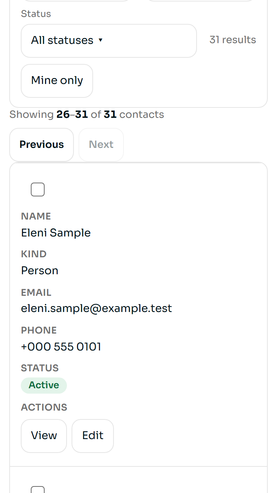
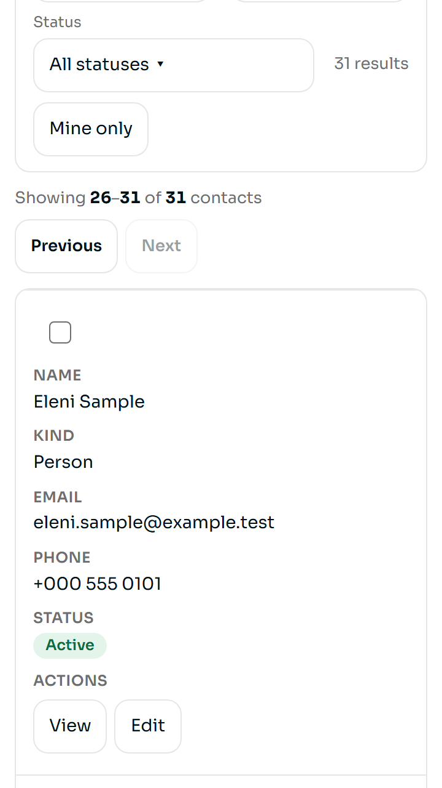
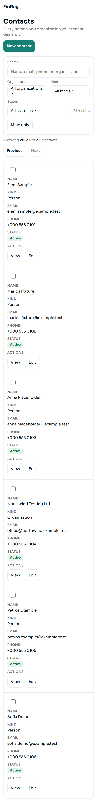
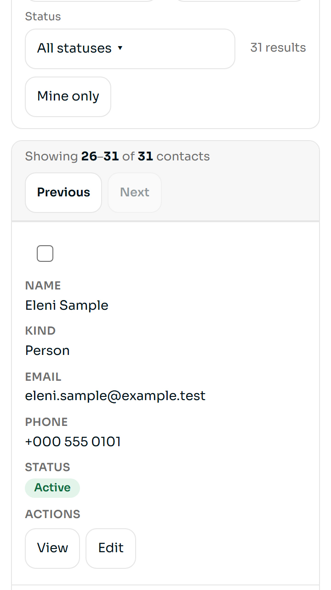
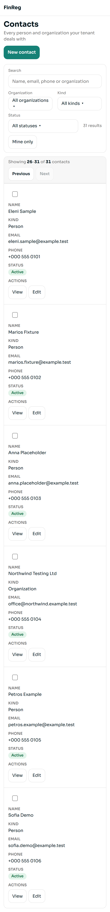
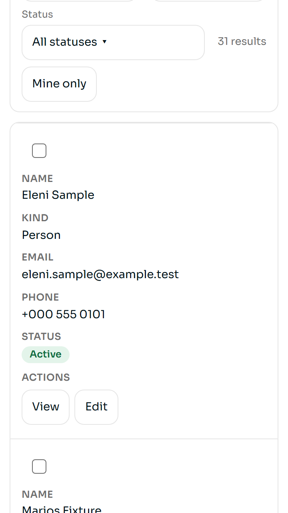
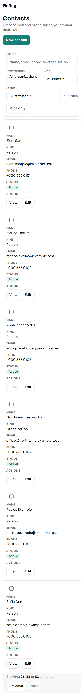
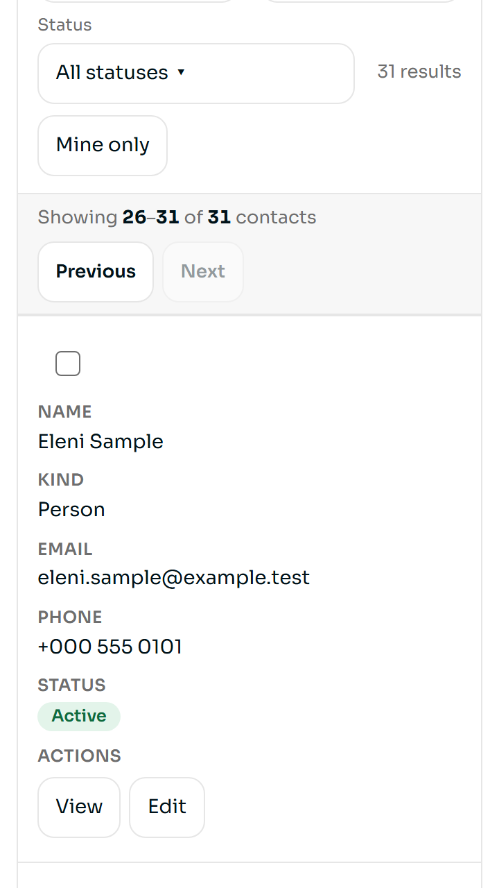
Q1 On a phone, how should the pager sit between the filters and the contacts?
- A Space above and below
- B Toolbar on the table
- C Footer on the table
- D One panel
- Changes needed
- None of these
Contacts on a computer (1280x800)
This picture is a computer screen: swipe sideways inside it.
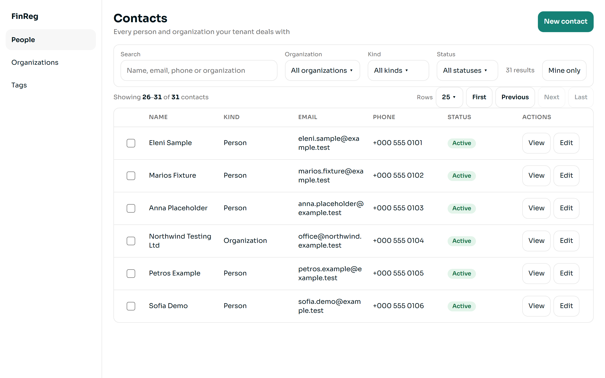
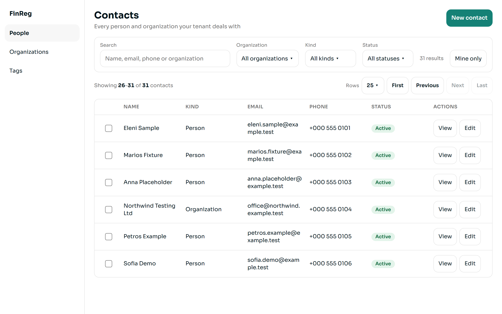
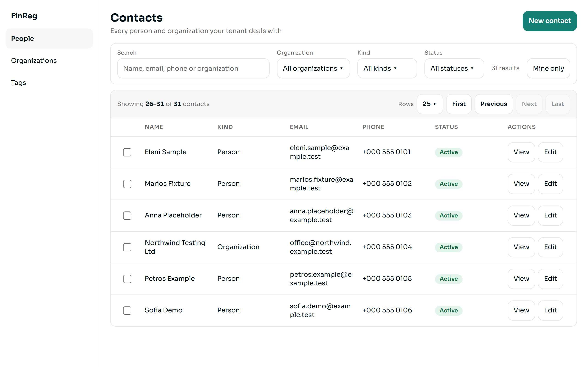
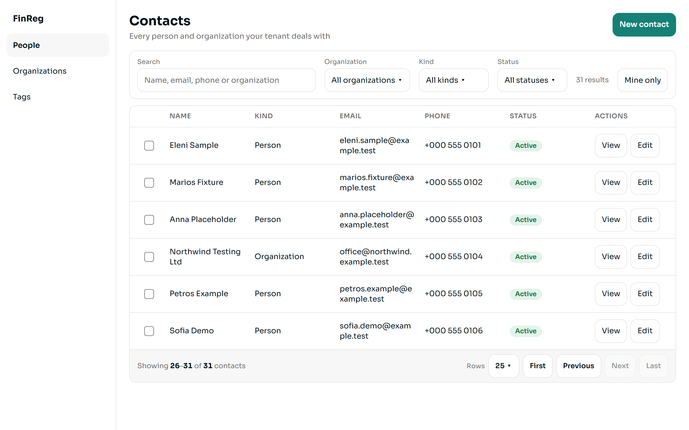
Q2 On a computer, how should the pager sit between the filters and the contacts table?
- A Space above and below
- B Toolbar on the table
- C Footer on the table
- D One panel
- Changes needed
- None of these